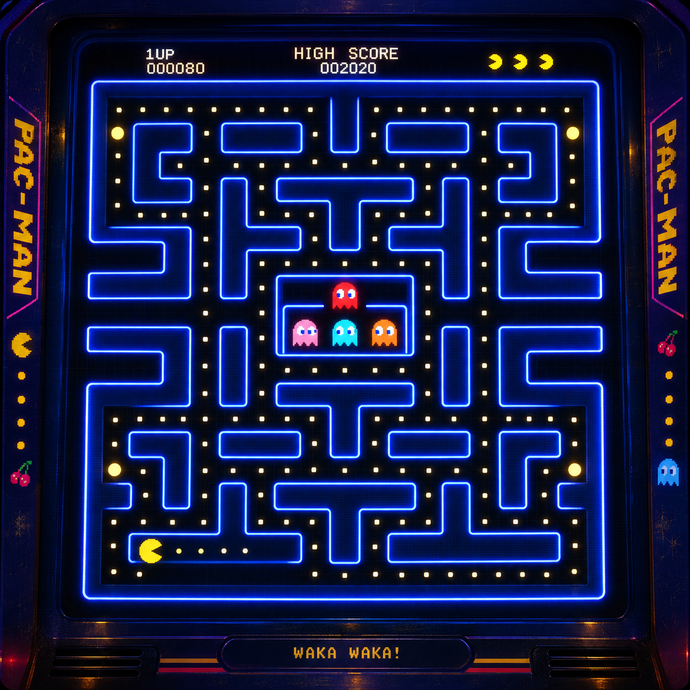

02 / Unreal Engine · 3D Retro Arcade Remake
PACMAN
A neon maze prototype with grid movement, ghost states, pellets, and classic arcade pressure.
Core Loop
Built In
Frame Focus
01 / About the Project
What this build is about
02 / What I Learned
Simple rules make deep play.
Pacman taught me that a small set of rules can create a surprisingly rich game. Movement, timing, and enemy personality all need to be readable before they can feel exciting.
The most important work happened in the details: buffered turns, fair collision space, and feedback that tells the player why a moment succeeded or failed.
03 / Game Features
A maze full of readable pressure.
04 / Challenges
Where things broke.
The hard part was preserving the sharp feel of the original while building a 3D version with more visual space and more systems running at once.
05 / Game Images
Inside the arcade.
Drag left or right, or use the mouse wheel, to explore the project images.
06 / Final Result

Ready to play.
The final result is a playable 3D Pacman loop with readable ghost behavior, responsive movement, satisfying power moments, and a clear arcade identity.
Back to projects